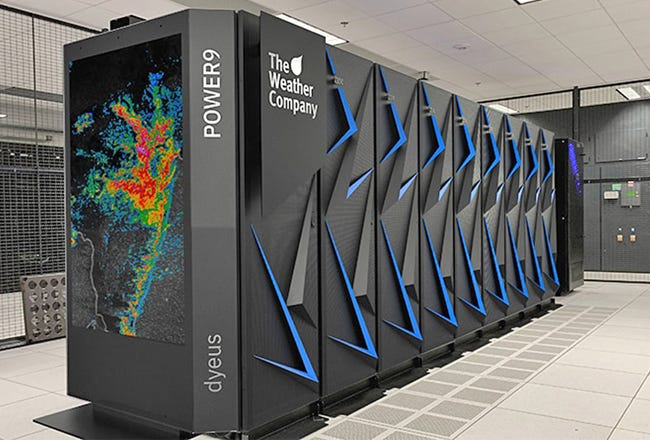
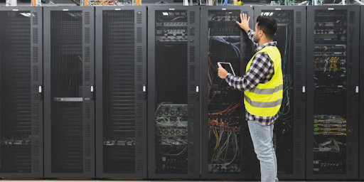
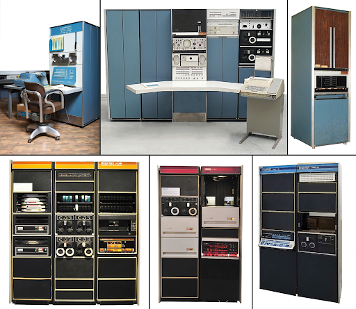
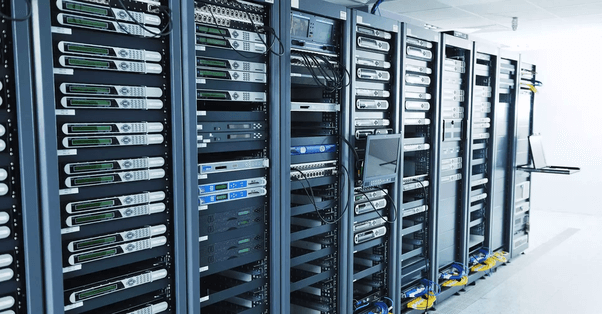
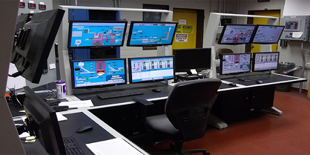
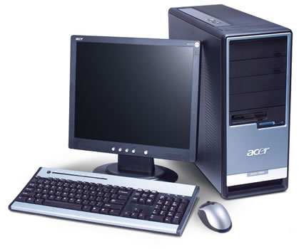

Comparative Study on Different Types of Computers
Introduction
Computers can be categorized based on their size, processing power, and specific functions they perform. Each type of computer has unique characteristics, such as speed, memory, energy consumption, and computational ability. In this study, we will compare different types of computers, including supercomputers, mainframes, mini computers, microcomputers, workstations, and servers. The comparison will focus on specific aspects such as CPU capabilities, memory, processing speed, power consumption, and their typical fields of use.
Discussion
The computing landscape consists of various types of computers, each designed for specific tasks and performance requirements. From the immense processing power of supercomputers to the everyday use of microcomputers, these machines differ significantly in terms of capabilities, energy consumption, and fields of application.
Supercomputers, for example, are used in research areas requiring immense computational power, such as weather modeling and complex simulations. In contrast, mainframe computers excel in handling large-scale enterprise operations, supporting mission-critical applications like banking systems and government databases. Mini computers, once widely used in small to mid-sized businesses, are now largely replaced by more powerful servers and workstations.
Workstations provide high-performance capabilities for technical and creative applications, such as scientific research and 3D rendering. Servers, typically employed to manage network resources and host websites, play a vital role in ensuring continuous service availability and data integrity. Microcomputers, the most common type, are personal computers used for a variety of tasks, from office work to gaming, and are found in homes and businesses worldwide.
In the following table, we compare these different types of computers based on various key characteristics, including processing speed, memory capacity, power consumption, and typical usage scenarios. This comparison helps highlight the strengths and specific uses of each type of computer, offering a clearer understanding of their place in the modern technological ecosystem.
| Types of Computers | Name/Brand | CPU | Memory | Processing Speed | Calculating Power | Working Principle | Energy Consumption | Field of Use |
|---|---|---|---|---|---|---|---|---|
| Supercomputer | Cray, IBM | High Frequency, Multi-Core | High (up to several TB) | Very High (Petaflops) | Extremely High (Exaflop) | Parallel Processing, Vector Calculations | Very High | Research, Weather Forecasting, Simulations |
| Mainframe Computers | IBM Z Series | Multi-Core | High (up to several TB) | High | Very High | Centralized Data Management, Virtualization | High | Banking, Government, Large Enterprises |
| Mini Computers | DEC PDP-11 | Moderate Speed | Medium (Up to 256 GB) | Moderate | Moderate (MIPS) | Batch Processing, Multi-User | Moderate | Mid-sized Businesses, Labs, Universities |
| Server | Dell PowerEdge | Multi-Core, 1-2 GHz | High (32-128 GB) | High | High | Handles Multiple Simultaneous Requests | Moderate | Websites, Data Centers, Network Services |
| Workstations | HP Z4, Apple Mac Pro | Multi-Core | High (32 GB to 1 TB) | Very High | High | Complex Calculations, Graphic Design | High | Scientific Research, 3D Animation, Video Editing |
| Micro Computers | Apple MacBook, Lenovo ThinkPad | Single to Multi-Core | Low to Moderate (8 GB - 64 GB) | Moderate | Low | Personal Computing | Low | Personal Use, Office Work, Gaming |
Examples
| Types of Computers | Sample Image | Description | Usage |
|---|---|---|---|
| Supercomputer |  | Extremely powerful systems designed to process vast amounts of data in parallel | Research, Weather Simulation, Complex Scientific Modeling |
| Mainframe Computers |  | High-performance systems optimized for handling large-scale, critical business applications | Banking Transactions, Government Data, Large Enterprise Data Processing |
| Mini Computers |  | Mid-range computers used for specific tasks requiring moderate performance | Small to Medium Business Applications, University Labs |
| Server |  | Machines designed to provide services to multiple clients in a network | Hosting Websites, Data Storage, Network Management |
| Workstations |  | High-performance computers designed for specialized tasks in technical fields | Engineering, 3D Design, Video Editing |
| Micro Computers |  | Personal computers with moderate capabilities for everyday tasks | Personal Use, Home Office, Small Business |
Comparison and Contrast
| Category | Mini Computer | Micro Computer | Workstation | Server |
|---|---|---|---|---|
| Processing Speed | Moderate (1-2 GHz) | Low to Moderate (2-3 GHz) | High (3-4 GHz) | High (2-3 GHz) |
| Memory Capacity | Medium (Up to 256 GB) | Low to Moderate (8 GB - 64 GB) | High (32 GB - 1 TB) | High (32 GB - 128 GB) |
| Power Consumption | Moderate | Low | High | Moderate |
| Minimum Usage | Small to Medium-sized Tasks | Everyday Personal or Office Work | Specialized Technical Applications | Network Services, Hosting |
| Typical Usage | Business Processing, Small Labs | Personal Computing, Gaming | Scientific Research, Engineering | Hosting, Network Services, Web Hosting |
References
- Rainer, A. (2021). Supercomputers: Their Design and Applications. Oxford University Press.
- Kharb, K. (2019). Understanding Computer Systems and Their Applications. Springer.
- Liu, M., & Zhai, G. (2020). Mainframe and Distributed Computing Systems: A Comparative Analysis. Wiley-Blackwell.
- Shaw, J. (2018). Workstations and Servers: Understanding Their Roles in Data Management. TechEd Publishers.
- Intel Corporation. (2022). Workstation Specifications. Intel.com.
- IBM Corporation. (2023). Mainframe Z Series Product Guide. IBM.com.